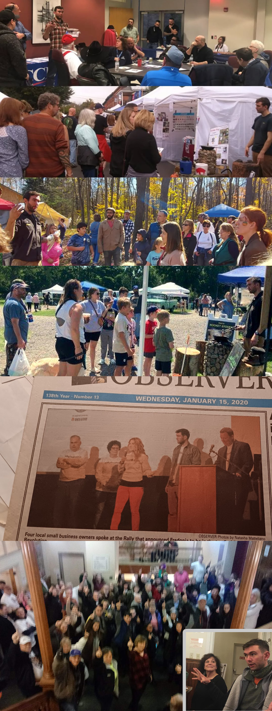

Welcome to My Professional Portfolio
I’m Paul Jackino, a hands-on Field Technician and Low-Voltage Generalist with 5+ years’ experience in structured cabling, AV systems, and IT logistics. I specialize in Ethernet/Cat6 terminations, router/switch setup, Wi-Fi optimization, and customer-facing troubleshooting.
Certified in CompTIA Security+ and AWS Cloud Practitioner, I combine safety, precision, and communication to deliver reliable service--indoors, outdoors, and in all conditions.
Skills & Certifications
- Certifications: CompTIA Security+ (2025), AWS Certified Cloud Practitioner (2025), AWS Certified AI Practitioner (2025), Certified ScrumMaster (CSM, 2024)
- Core Skills: Structured cabling (Cat5e/Cat6), device installation, signal testing, troubleshooting, customer communication, safety & time management
- Technical Areas: Low-voltage wiring, coax and Ethernet terminations, router/modem setup, Wi-Fi access point placement, network diagnostics, hardware maintenance, and documentation
Education
- Associate of Applied Science in Information Technology, Jamestown Community College (2024)
- Bachelor of Science in Communication, State University of New York at Fredonia (2012)
Field Cabling & Networking Projects
Conexiant Event Network Setup
- Installed and labeled Cat6 runs for live broadcast systems
- Configured switches and troubleshooting AV over IP
- Maintained network uptime under deadline pressure
Small Business Wi-Fi Cleanup
- Rewired router/AP layout for coverage and safety
- Documented topology and simplified patch panel labeling
- Improved reliability and client satisfaction
White Terrace Carpentry Assistance
- Installed conduit and low-voltage runs on active construction sites
- Used ladders, hand/power tools, and adhered to PPE standards
Password Management: Strengthening Digital Security
In this video, I demonstrate the importance of using a password manager to enhance security. I walk through how to set up and manage passwords securely across devices, ensuring both personal and corporate safety from cyber threats.
For more details on password managers and recommended tools, visit: Bitwarden.com
Microsoft 365 Tech Tip
Below is a video I created for my organization to learn from. It demonstrate my expertise in Microsoft 365 and showcases how to effectively use a modern tool to streamline team collaboration and productivity.
Streamlining Operations: Workflow Optimization Project
Below is a video I created to demonstrate my cross-functional workflow optimization initiative, where I identified inefficiencies in team communication, scheduling, and task management. By integrating Asana and collaborating with five departments, I reduced search times by 20% and improved cross-team collaboration.
Public Speaking with Passion
Below is a collage I created to showcase some of my various public speaking experiences. I've learned that public speaking can be less scary and more fun when you love what you are speaking about.
Projects Extended
- Fredonia’s Small Business Revolution Campaign (National TV)
- Custom DJ Equipment Rack Build at 12
- Client Engagement & Discovery Processes
- Event Production Team Collaboration
- Fredonia Farmers' Market Glögg Adventure: A Community Collaboration
- Fredonia Farmer's Market Presentation at Village Board Meeting
- Returning to school for A.A.S. in IT while working full-time (Succeeded)
- Rocket Stove Business (paulsrocketstoves.com)
- Teaching Backpackers About Rocket Stoves
- Equipment Room Process Improvement
- Organizing Children's Group at Farmers Market
- Rally Speech: Addressed 400 people at Village Hall
- Musician Promotion: 20+ Signatures
- Saved $22,500 for Organization
- Overnight Drive to Washington D.C. for Client (Far Above & Beyond)
- Solo Trip to Romania at 21
- Wood-Fired Oven Construction
- Original Album Release and Promotion
- School Radio Show Leadership
- Volunteer Work: Soup Kitchen
- Volunteer Work: Directing Traffic
- Bookshelf Building
- Self Discipline Metrics - Above-average performance tracking
- Asset Recovery and Inventory Management
- Secured Grant-Paid Intern from Local College (Twice)
- Trained and Supervised Interns and Employees
- Songwriter, Musician, Producer: Raw Music Video
- From Homeowner to Rambling On
- Community Sandwich Pop-Up
References
Don’t just take MY word! The following individuals have graciously agreed to let me share their contact information. You may reach out to them to verify my character and hear about their experiences working with me. I sincerely appreciate their willingness to vouch for me.
-
Jon Sanchez - Senior Enterprise Account Executive, Former Manager
Relationship: Jon managed my role as a Marketing Communications Specialist at SellingHive, where I transformed complex stakeholder needs into deliverables like tutorials, app graphics, and web media. Jon recognized me as the company's Most Versatile Employee, I continued collaborating with Jon on freelance projects, reflecting my adaptability and commitment to success.
Years Known: 6
Email: jpsanchez27@gmail.com | Phone: +1 (408) 307-3315
-
Kelly Allessi-Olson - HR Manager at Nestlé Purina North America, My Former HR Manager
Relationship: Kelly was my HR manager at Nestlé Purina North America, where I excelled as a Processing Operator, ensuring quality control, safety, and production goals in a fast-paced team environment. She can speak to my professionalism, communication, perfect attendance, and ability to foster a collaborative and high-performing team culture.
Years Known: 8
Email: allessikj@gmail.com | Phone: +1 (716) 679-8807
-
Larry Fiorella - Financial Advisor, Community Leader, Mentor, Client
Relationship: Larry, a prominent community leader, has worked with me extensively on local initiatives and events, including Fredonia's successful Small Business Revolution campaign. He can attest to my organizational skills, ability to generate impactful results, and leadership in meetings, where I contribute ideas, ask thoughtful questions, and engage stakeholders effectively. As a client, Larry has experienced my dedication to understanding needs, enhancing events, and fostering community spirit.
Years Known: 10
Email: lcfiorella@gmail.com | Phone: +1 (716) 785-7123
-
Todd Tranum - Executive Director of the Manufacturers Association of the Southern Tier & President of Dream It Do It WNY, Team Lead, Mentor, Client
Relationship: Todd, as President/CEO of the Chautauqua County Chamber of Commerce and Executive Director of the Manufacturers Association, managed my work on a data migration project for the Chamber. I organized and verified member data for cloud-based software, collaborating with stakeholders to ensure accuracy and deliver results. Todd also witnessed my leadership and community-driven initiative during Fredonia's Small Business Revolution campaign, where I engaged teams, inspired action, and contributed to our grassroots success. He can speak to my professionalism, organizational skills, and commitment to fostering community and delivering excellence.
Years Known: 5
Email: ttranum@mast-wny.com | Phone: +1 (716) 499-2167
-
Dayna Chambers - Associate Director, Project Management, Former Colleague
Relationship: Dayna, formerly the Associate Director of Project Management at BroadcastMed, LLC (doing business as Conexiant), oversaw projects I supported as a logistics coordinator and IT technician. She witnessed my initiative in enhancing workflows, including migrating processes into centralized platforms like Asana, and my effective communication with stakeholders to align project goals. Dana can attest to my proactive approach, strong organizational skills, and ability to deliver results while fostering collaboration across teams.
Years Known: 4.5
Email: dchambers4516@gmail.com | Phone: +1 (716) 397-0439
-
Michael Brunacini - Logistics Manager, Colleague, Temporary Employee
Relationship: Mike has worked with me in multiple capacities since we met in college, including as an employee for my entrepreneurial venture and as my colleague at BroadcastMed, LLC (doing business as Conexiant). He can speak to my ability to lead and delegate effectively, ensuring tasks align with team members’ strengths, as well as my organizational skills, professionalism, and consistent commitment to excellence in collaborative settings.
Years Known: 15
Email: mikebrunacini@hotmail.com | Phone: +1 (716) 969-4236